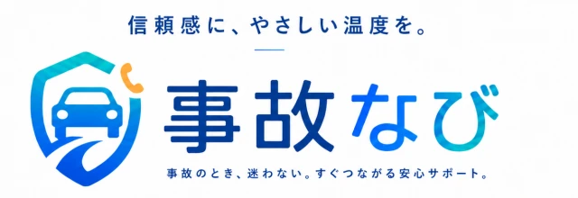

AI Enablement
01
AIを現場業務で使える形に落とし込む。
生成AIの基礎理解から、社内ルール、業務フローへの組み込み、研修実施まで、現場で無理なく使える運用を支援します。
- AI活用研修・ハンズオンの実施
- 社内活用ルールの整備
- 日常業務へのAI導入支援
Case
Solution
創業から積み重ねてきた取り組みを、データで整理しました。
Partners

掲載許諾をいただいた企業・ブランドのロゴを掲載します。
Support Area
公開可能な個別実績は順次掲載予定です。現在は、提供中の事業領域ごとに、Opus.netが対応できる支援内容を匿名化した形でご紹介します。
生成AIの基礎理解から、社内ルール、業務フローへの組み込み、研修実施まで、現場で無理なく使える運用を支援します。
交通事故に遭われた方が、治療先や修理対応などで迷わないよう、状況整理から適切なサポート先への接続までを支援します。
企業の魅力を伝える映像制作と、業務を支えるシステム開発を組み合わせ、情報発信と日々の運用改善を支援します。
SNS投稿だけで終わらせず、広告運用、Webサイト、LINE公式アカウントなどを組み合わせ、問い合わせや来店につながる導線を設計します。
Future
信頼で社会を支える、未来のインフラへ。テクノロジーと専門知識を活かし、人と企業の前進を支える存在を目指します。
すべての判断と行動の基準は「正しいかどうか」。短期的な利益より、長期的な信頼を大切にします。
専門性を高め続け、正確な情報で人を支える。学びを止めず、社会に還元します。
社会が抱える課題に真摯に向き合い、創造的な発想で、より良い社会の実現を目指し続けます。